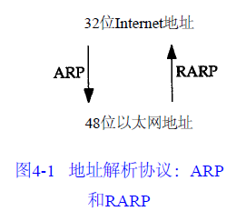

ARP地址解析协议
Table of Contents
地址解析协议
数据链路如以太网或令牌环网都有自己的寻址机制(常常为48bit地址)，这是使用数据链路的任何网络层都必须遵从的。一个网络如以太网可以同时被不同的网络层使用，例如一组使用TCP/IP协议的主机和另一组使用某种PC网络软件的主机可以共享相同的电缆
当一台主机把以太网数据帧发送到位于同一局域网上的另一台主机时，是根据48bit的以太网地址来确定目的接口的。设备驱动程序从不检查IP数据报中的目的IP地址
地址解析为这两种不同的地址形式提供映射：32bit的IP地址和数据链路层使用的任何类型的地址
本章及下一章要讨论的两种协议如下图所示：

- ARP: 地址解析协议，为IP地址到对应的硬件地址之间提供动态映射。之所以用动态这个词是因为这个过程是自动完成的，一般应用程序用户或系统管理员不必关心
- RARP：逆地址解析协议，是被那些没有磁盘驱动器的系统使用（一般是无盘工作站或X终端），它需要系统管理员进行手工设置
ftp实例
任何时候敲入下面这个形式的命令：
$ ftp bsdi
都会进行以下这些步骤：
- 应用程序FTP客户端调用函数gethostbyname(3)把主机名(bsdi)转换成32bit的IP地址。这个函数在DNS(域名系统)中称作解析器，这个转换过程或者使用DNS，或者在较小网络中使用一个静态的主机文件(/etc/hosts)
- FTP客户端请求TCP用得到的IP地址建立连接
- TCP发送一个连接请求分段到远端的主机，即用上述IP地址发送一份IP数据报
- 如果目的主机在本地网络上（如以太网、令牌环网或点对点链接的另一端），那么IP数据报可以直接送到目的主机上。如果目的主机在一个远程网络上，那么就通过IP选路函数来确定位于本地网络上的下一站路由器地址，并让它转发IP数据报。在这两种情况下，IP数据报都是被送到位于本地网络上的一台主机或路由器
- 假定是一个以太网，那么发送端主机必须把32bit的IP地址变换成48bit的以太网地址。从逻辑Internet地址到对应的物理硬件地址需要进行翻译。这就是ARP的功能。ARP本来是用于广播网络的，有许多主机或路由器连在同一个网络上
- ARP发送一份称作ARP请求的以太网数据帧给以太网上的每个主机。这个过程称作广播，如图4-2中的虚线所示。ARP请求数据帧中包含目的主机的IP地址（主机名为bsdi），其意思是”如果你是这个IP地址的拥有者，请回答你的硬件地址“
- 目的主机的ARP层收到这份广播报文后，识别出这是发送端在寻问它的IP地址，于是发送一个ARP应答。这个ARP应答包含IP地址及对应的硬件地址
- 收到ARP应答后，使ARP进行请求—应答交换的IP数据报现在就可以传送了
- 发送IP数据报到目的主机
这些步骤的序号如图4-2所示：
在ARP背后有一个基本概念，那就是网络接口有一个硬件地址（一个48bit的值，标识不同的以太网或令牌环网络接口）。在硬件层次上进行的数据帧交换必须有正确的接口地址。但是，TCP/IP有自己的地址：32bit的IP地址。知道主机的IP地址并不能让内核发送一帧数据给主机。内核（如以太网驱动程序）必须知道目的端的硬件地址才能发送数据。ARP的功能是在32bit的IP地址和采用不同网络技术的硬件地址之间提供动态映射
点对点链路不使用ARP。当设置这些链路时（一般在引导过程进行），必须告知内核链路每一端的IP地址。像以太网地址这样的硬件地址并不涉及
高速缓存
ARP高效运行的关键是由于每个主机上都有一个ARP高速缓存。这个高速缓存存放了最近Internet地址到硬件地址之间的映射记录。高速缓存中每一项的生存时间一般为20分钟，起始时间从被创建时开始算起
可以用arp(8)命令来检查ARP高速缓存。参数-a的意思是显示高速缓存中所有的内容：
$ sudo arp -a ? (192.168.2.1) at b0:95:8e:23:f9:d1 [ether] on eth0 ? (192.168.2.155) at b8:27:eb:43:67:94 [ether] on eth0
48bit的以太网地址用6个十六进制的数来表示，中间以冒号隔开
分组格式
在以太网上解析IP地址时，ARP请求和应答分组的格式如图4-3所示（ARP可以用于其他类型的网络，可以解析IP地址以外的地址。紧跟着帧类型字段的前四个字段指定了最后四个字段的类型和长度）：

- 以太网报头中的前两个字段是以太网的源地址和目的地址(6bit的硬件地址)。目的地址为全1的特殊地址是广播地址。电缆上的所有以太网接口都要接收广播的数据帧
- 两个字节长的以太网帧类型表示后面数据的类型。对于ARP请求或应答来说，该字段的值为0x0806。
硬件类型
硬件类型字段表示硬件地址的类型。它的值为1即表示以太网硬件地址
协议类型
协议类型字段表示要映射的协议地址类型。它的值为0x0800即表示IP地址。它的值与包含IP数据报的以太网数据帧中的类型字段的值相同，这是有意设计的
硬件地址长度
硬件地址长度，以字节为单位，对于以太网上IP地址的ARP请求或应答来说，它的值为6
协议地址长度
协议地址长度，以字节为单位，对于以太网上IP地址的ARP请求或应答来说，它的值为4
op
操作字段指出四种操作类型：
- 值为1：ARP请求
- 值为2：ARP应答
- 值为3：RARP请求
- 值为4：RARP应答
这个字段必需的，因为ARP请求和ARP应答的帧类型字段值是相同的
硬件地址和IP地址
- 发送端的硬件地址：6bit以太网地址
- 发送端的IP地址：4bit的IP地址
- 目的端的硬件地址：6bit以太网地址
- 目的端的IP地址：4bit的IP地址
对于一个ARP请求来说，除目的端硬件地址外的所有其他的字段都有填充值。当系统收到一份目的端为本机的ARP请求报文后，它就把硬件地址填进去，然后用两个目的端地址分别替换两个发送端地址，并把操作字段置为2，最后把它发送回去
arp例子
为了看清楚ARP的运作过程，我们执行telnet命令与无效的服务器连接：
当在另一个系统（sun）上运行带有-e选项的tcpdump命令时，显示的是硬件地址。下图为tcpdump的原始输出：
我们删除了tcpdump命令输出的最后四行，因为它们是结束连接的信息，与这里讨论的内容不相关
- 第1行中：
- 源端主机（bsdi）的硬件地址是0:0:c0:6f:2d:40。目的端主机的硬件地址是ff:ff:ff:ff:ff:ff，这是一个以太网广播地址。电缆上的每个以太网接口都要接收这个数据帧并对它进行处理
- 紧接着的一个输出字段是arp，表明帧类型字段的值是0x0806，说明此数据帧是一个ARP请求或回答
- 单词arp或ip后面的值60指的是以太网数据帧的长度。由于ARP请求或回答的数据帧长都是42字节（28字节的ARP数据，14字节的以太网帧头），因此，每一帧都必须加入填充字符以达到以太网的最小长度要求：60字节
- 这个最小长度60字节包含14字节的以太网帧头，但是不包括4个字节的以太网帧尾。有一些书把最小长度定为64字节，它包括以太网的帧尾
- 我们曾经中把最小长度定为46字节，是有意不包括14字节的帧首部
- 使用MTU经常是因为它对IP数据报的长度进行限制，但一般与最小长度无关
- 大多数的设备驱动程序或接口卡自动地用填充字符把以太网数据帧充满到最小长度。第3，4和5行中的IP数据报（包含TCP段）的长度都比最小长度短，因此都必须填充到60字节
- 下一个输出字段arp who-has表示作为ARP请求的这个数据帧中，目的IP地址是svr4的地址，发送端的IP地址是bsdi的地址。tcpdump打印出主机名对应的默认IP地址
- 第2行中：
- 尽管ARP请求是广播的，但是ARP应答的目的地址却是bsdi（0:0:c0:6f:2d:40）。ARP应答是直接送到请求端主机的，不是广播的
- tcpdump打印出arp reply的字样，同时打印出响应者的主机名和硬件地址
- 第3行：一个请求建立连接的TCP段。它的目的硬件地址是目的主机(svr4)
在每一行中，行号后面的数字表示tcpdump收到分组的时间（以秒为单位）。除第1行外，其他每行在括号中还包含了与上一行的时间差异（以秒为单位）。从这个图可以看出，发送ARP请求与收到ARP回答之间的延时是2.2ms。而在0.7ms之后发出第一段TCP报文。在本例中，用ARP进行动态地址解析的时间小于3ms
最后在tcpdump命令输出中，我们没有看到svr4在发出第一段TCP报文（第4行）之前发出的ARP请求。这是因为可能在svr4的ARP高速缓存中已经有bsdi的表项。一般情况下，当系统收到ARP请求或发送ARP应答时，都要把请求端的硬件地址和IP地址存入ARP高速缓存。在逻辑上可以假设，如果请求端要发送IP数据报，那么数据报的接收端将很可能会发送一个应答
对不存在主机的ARP请求
如果查询的主机已关机或不存在会发生什么情况呢？为此我们指定一个并不存在的Internet地址—根据网络号和子网号所对应的网络确实存在，但是并不存在所指定的主机号：
tcpdump命令的输出如图4-5所示：
这一次，没有用-e选项，因为已经知道ARP请求是在网上广播的
第1次请求发生后5.5秒进行第2次请求，在24秒之后又进行第3次请求。tcpdump命令输出的超时限制为29.5秒。但是，在telnet命令使用前后分别用date命令检查时间，可以发现Telnet客户端的连接请求似乎在大约75秒后才放弃。事实上，在后面将看到，大多数的BSD实现把完成TCP连接请求的时间限制设置为75秒
以后将看到建立连接的TCP报文段序列时，会发现ARP请求对应于TCP试图发送的初始TCP SYN（同步）段
注意：在线路上始终看不到TCP的报文段。只能看到的是ARP请求。因为只有ARP回答返回时，TCP报文段才可以被发送，而硬件地址到这时才可能知道。如果用过滤模式运行tcpdump命令，只查看TCP数据，那么将没有任何输出
ARP高速缓存超时设置
在ARP高速缓存中的表项一般都要设置超时值。从伯克利系统演变而来的系统一般对完整的表项设置超时值为20分钟，而对不完整的表项设置超时值为3分钟。当这些表项再次使用时，这些实现一般都把超时值重新设为20分钟
RFC表明即使表项正在使用时，超时值也应该启动，但是大多数从伯克利系统演变而来的系统没有这样做，它们每次都是在访问表项时重设超时值
arp代理
ARP代理：如果ARP请求是从一个网络的主机发往另一个网络上的主机，那么连接这两个网络的路由器就可以回答该请求，这个过程称作委托ARP或ARP代理。这样可以欺骗发起ARP请求的发送端，使它误以为路由器就是目的主机，而事实上目的主机是在路由器的“另一边”。路由器的功能相当于目的主机的代理，把分组从其他主机转发给它
图3-10里系统sun与两个以太网相连。但是，事实上并不是这样，在sun和子网140.252.1之间实际存在一个路由器，就是这个具有ARP代理功能的路由器使得sun就好像在子网140.252.1上一样。这个路由器是Telebit NetBlazer，取名为netb，在子网和主机sun之间，具体安置如图4-6所示：
当子网140.252.1（称作gemini）上的其他主机有一份IP数据报要传给地址为140.252.1.29的sun时，gemini比较网络号140.252和子网号1，因为它们都是相同的，因而在图4-6上面的以太网中发送IP地址140.252.1.29的ARP请求。路由器netb识别出该IP地址属于它的一个拔号主机，于是把它的以太网接口地址140.252.1作为硬件地址来回答。主机gemini通过以太网发送IP数据报到netb，netb通过拨号SLIP链路把数据报转发到sun。这个过程对于所有140.252.1子网上的主机来说都是透明的，主机sun实际上是在路由器netb后面进行配置的
如果在主机gemini上执行arp命令，经过与主机sun通信以后，可以发现在同一个子网140.252.1上的netb和sun的IP地址映射的硬件地址是相同的。这通常是使用委托ARP的线索：
gemini % arp -a #这里是子网140.252.1上其他主机的输出行，对于这些主机，netb和sun的硬件地址是一样的，所有发给sun的报文，委托netb再发给sun netb (140.252.1.183) at 0:80:ad:3:6a:80 sun (140.252.1.29) at 0:80:ad:3:6a:80
- 路由器netb的下方（SLIP链路）显然缺少一个IP地址。为什么在拨号SLIP链路的两端只拥有一个IP地址，而在bsdi和slip之间的两端却分别有一个IP地址？用ifconfig命令可以显示拨号SLIP链路的目的地址，它是140.252.1.183。NetBlazer不需要知道拨号SLIP链路每一端的IP地址。相反，它通过分组到达的串行线路接口来确定发送分组的拨号主机，因此对于连接到路由器的每个拨号主机不需要用唯一的IP地址。所有的拨号主机使用同一个IP地址140.252.1.183作为SLIP链路的目的地址
- ARP代理可以把数据报传送到路由器sun上，但是子网140.252.13上的其他主机是如何处理的呢？选路必须使数据报能到达其他主机。这里需要特殊处理，选路表中的表项必须在网络140.252的某个地方制定，使所有数据报的目的端要么是子网140.252.13，要么是子网上的某个主机，这样都指向路由器netb。而路由器netb知道如何把数据报传到最终的目的端，即通过路由器sun。
ARP代理也称作混合ARP或ARP出租。ARP代理的其他用途：通过两个物理网络之间的路由器可以互相隐藏物理网络。在这种情况下，两个物理网络可以使用相同的网络号，只要把中间的路由器设置成一个ARP代理，以响应一个网络到另一个网络主机的ARP请求。这种技术在过去用来隐藏一组在不同物理电缆上运行旧版TCP/IP的主机。分开这些旧主机有两个共同的理由：
- 它们不能处理子网划分
- 它们使用旧的广播地址（所有比特值为0的主机号，而不是目前使用的所有比特值为1的主机号）
免费arp
我们可以看到的另一个ARP特性称作免费ARP。它是指主机发送ARP查找自己的IP地址。通常，它发生在系统引导期间进行接口配置的时候。在互联网中，如果我们引导主机bsdi并在主机sun上运行tcpdump命令，可以看到如图4-7所示的分组：
对于ARP请求中的各字段来说，发送端的协议地址和目的端的协议地址是一致的：即主机bsdi的地址140.252.13.35。另外，以太网报头中的源地址0:0:c0:6f:2d:40，正如tcpdump命令显示的那样，等于发送端的硬件地址：
免费ARP可以有两个方面的作用：
- 一个主机可以通过它来确定另一个主机是否设置了相同的IP地址。主机bsdi并不希望对此请求有一个回答。但是，如果收到一个回答，那么就会在终端日志上产生一个错误消息“以太网地址： a:b:c:d:e:f发送来重复的IP地址”。这样就可以警告系统管理员，某个系统有不正确的设置
- 如果发送免费ARP的主机正好改变了硬件地址（很可能是主机关机了，并换了一块接口卡，然后重新启动），那么这个分组就可以使其他主机高速缓存中旧的硬件地址进行相应的更新。一个比较著名的ARP协议是，如果主机收到某个IP地址的ARP请求，而且它已经在接收者的高速缓存中，那么就要用ARP请求中的发送端硬件地址（如以太网地址）对高速缓存中相应的内容进行更新。主机接收到任何ARP请求都要完成这个操作（ARP请求是在网上广播的，因此每次发送ARP请求时网络上的所有主机都要这样做）
不幸的是，免费ARP能否实用取决于所有不同类型的客户端都要有正确的ARP协议实现，SunOS 4.1.3和4.4BSD在引导时都发送免费ARP，但是SVR4却没有这样做
arp命令
- -a：显示ARP高速缓存中的所有内容
- -d：超级用户可以来删除ARP高速缓存中的某一项内容
- -s：增加高速缓存中的内容。这个参数需要主机名和以太网地址，对应于主机名的IP地址和以太网地址被增加到高速缓存中，新增加的内容是永久性的
- 命令行末尾的关键字temp：新增加的内容有时效性
- 命令行末尾的关键字pub：可以使系统起着主机ARP代理的作用，系统将回答与主机名对应的IP地址的ARP请求，并以指定的以太网地址作为应答。如果广播的地址是系统本身，那么系统就为指定的主机名起着委托ARP代理的作用